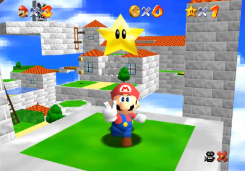
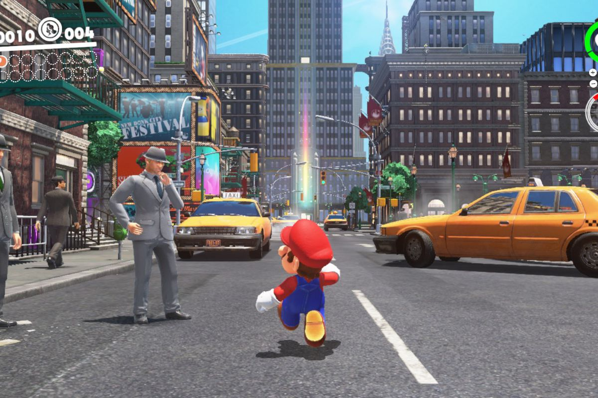
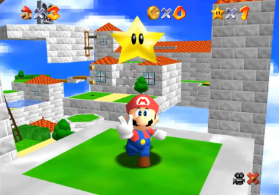
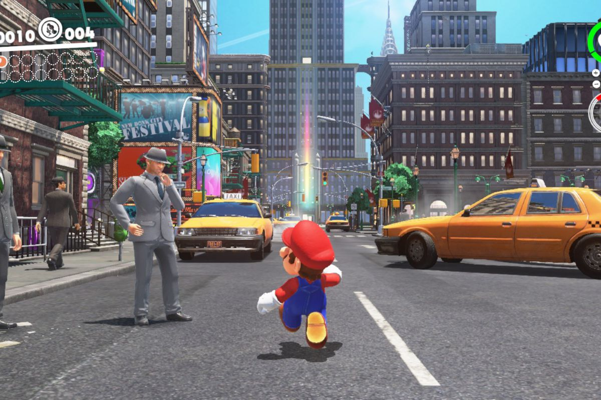
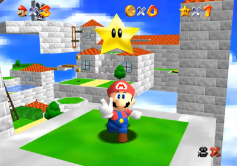
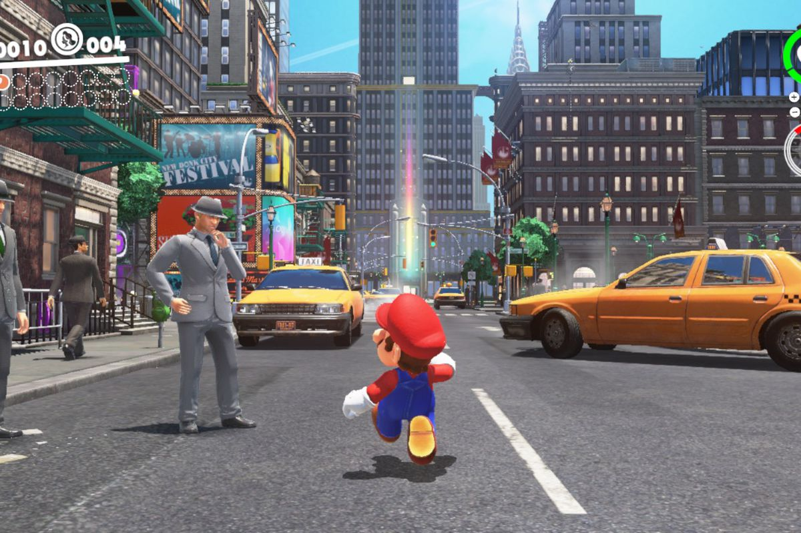
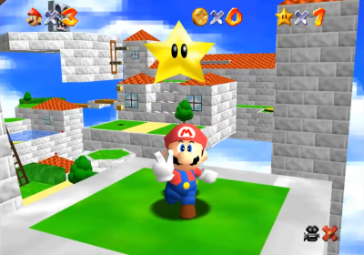
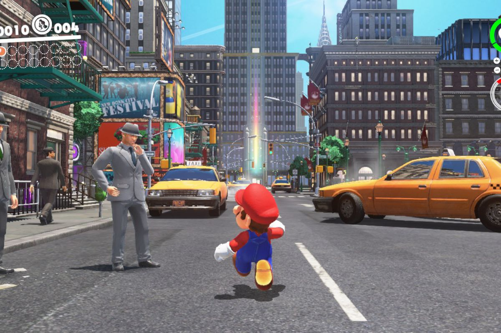

Super Mario (1985) was first released on the NES. It was released in Japan in 1985 and then North America and Europe. The game was designed by Shigeru Miyamoto and Takashi Tezuka. Players control Mario, or his brother Luigi in the multiplayer mode, as they travel the Mushroom Kingdom to rescue Princess Toadstool from the antagonist, Bowser. They must traverse side-scrolling stages while avoiding hazards such as enemies and pits with the aid of power-ups such as the Super Mushroom, Fire Flower and Starman. It was designed with ease of access in mind, with the first level, World 1-1, designed to introduce the core mechanics. The music was composed by Koji Kondo, and is considered influential in making music a larger aspect of video games.
Super Mario Bros is frequently cited as one of the greatest video games of all time, with praise going towards its precise controls. It has sold over 40 million physical copies, also making it one of the bestselling games of all time. It is credited alongside the NES as one of the key factors in reviving the video game industry after the 1983 crash, and helped popularize side-scrolling platform games. It began an expansive franchise including a long-running game series, an animated television series, and a feature film. Ports and remakes of the game have been released for most of Nintendo's future systems. Alongside Mario himself, Super Mario Bros. has become a prominent aspect of popular culture.
In Super Mario Bros., the player takes on the role of Mario, the protagonist of the series. Mario's younger brother, Luigi, is controlled by the second player in the game's multiplayer mode and assumes the same plot role and functionality as Mario. The objective is to race through the Mushroom Kingdom, survive the main antagonist Bowser's forces, and save Princess Toadstool. The game is a side-scrolling platformer; the player moves from the left side of the screen to the right side in order to reach the flag pole at the end of each level.
The game world features coins scattered around for Mario to collect and special bricks marked with a question mark (?), which when hit from below by Mario may reveal more coins or a special item. Other "secret", often invisible, bricks may contain more coins or rare items. If the player gains a Super Mushroom, Mario grows to double his size and gains the ability to break bricks above him. If Mario gets hit in this mode, then instead of dying he turns back to regular Mario. Players start with a certain number of lives and may gain additional lives by picking up green spotted orange 1-Up mushrooms hidden in bricks, or by collecting 100 coins, defeating several enemies in a row with a Koopa shell, or bouncing on enemies successively without touching the ground. Mario loses a life if he takes damage while small, falls in a bottomless pit, or runs out of time. The game ends when all lives are lost, although a button input can be used on the game over screen to continue from the first level of the world in which the player died.
Mario's primary attack is jumping on top of enemies, though many enemies have differing responses to this. For example, a Goomba will flatten and be defeated, while a Koopa Troopa will temporarily retract into its shell, allowing Mario to use it as a projectile. These shells may be deflected off a wall to destroy other enemies, though they can also bounce back against Mario, which will hurt or kill him. Other enemies, such as underwater foes and enemies with spiked tops, cannot be jumped on and damage the player instead. Mario can also defeat enemies above him by jumping to hit the brick that the enemy is standing on. Mario may also acquire the Fire Flower from certain ? blocks that when picked up changes the color of Super Mario's outfit and allows him to throw fireballs. A less common item is the Starman, which often appears when Mario hits certain concealed or otherwise invisible blocks. This item makes Mario temporarily invincible to most hazards and capable of defeating enemies on contact.
The game consists of eight worlds with four sub-levels called "stages" in each world. The final stage of each world takes place in a castle where Bowser is fought above a suspension bridge; the first seven of these Bowsers are "false Bowsers" whom are actually minions disguised as him, whilst the real Bowser is found in the 8th world. Bowser and his decoys are defeated by jumping over them and reaching the axe on the end of the bridge, although they can also be defeated using a Fire Flower. The game also includes some stages taking place underwater, which contain different enemies. In addition, there are bonuses and secret areas in the game. Most secret areas contain more coins for Mario to collect, but some contain "warp pipes" that allow Mario to advance directly to later worlds in the game without completing the intervening stages. After completing the game once, the player is rewarded with the ability to replay the game with changes made to increase its difficulty, such as all Goombas in the game being replaced with Buzzy Beetles, enemies similar to Koopa Troopas who cannot be defeated using the Fire Flower.